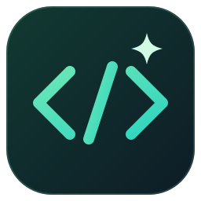

星码StarCode
AI Agent 客户端
基于 OpenCode 改造的开源 AI Agent 客户端，正在准备星梦自己的产品体验。
目前完成 fork 初始化和 README 品牌展示。客户端内品牌、独立功能与发行流程仍待开发；上游已有能力不代表星码已经完成独立验收或发布。
基于 OpenCodeAI AgentMIT
当前状态：尚无星码独立发行版；仓库中保留的 OpenCode 安装渠道属于上游。
项目能力与进度
- 已完成公开 fork，保留上游 Git 历史与 MIT 声明
- 已有独立 Logo 与项目品牌说明
- 客户端品牌改造、产品差异化与独立发行待完成
平台与交付方式
独立支持平台与安装方式尚未发布，后续以星码自己的 Release 为准。
源码与进度
关注公开仓库了解开发进展，独立安装包与正式发行以项目后续公告为准。
核对于 2026-11-17，内容来源：StarCode README 与公开仓库。开发状态与发行情况以项目最新记录为准。